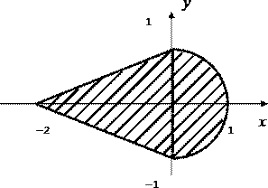

Задание b

Страница 2 верстается с фоном 2. Расположенным методом замостить, заголовком с настройками шрифта Arial, 24 пт, полужирный, курсив, подчеркнутый, слева на странице располагается описание постановки задачи, абзац в двойной рамке, для абзаца задан фон в буквенном формате, справа изображение области (изображение var2.jpg сформировать на основе данных в файле task.docx)).